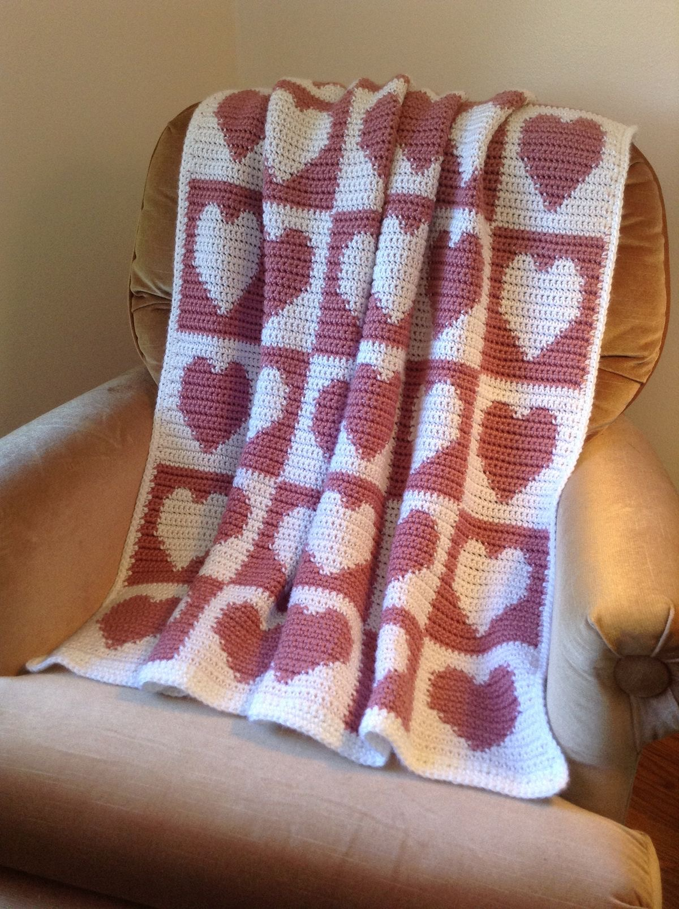
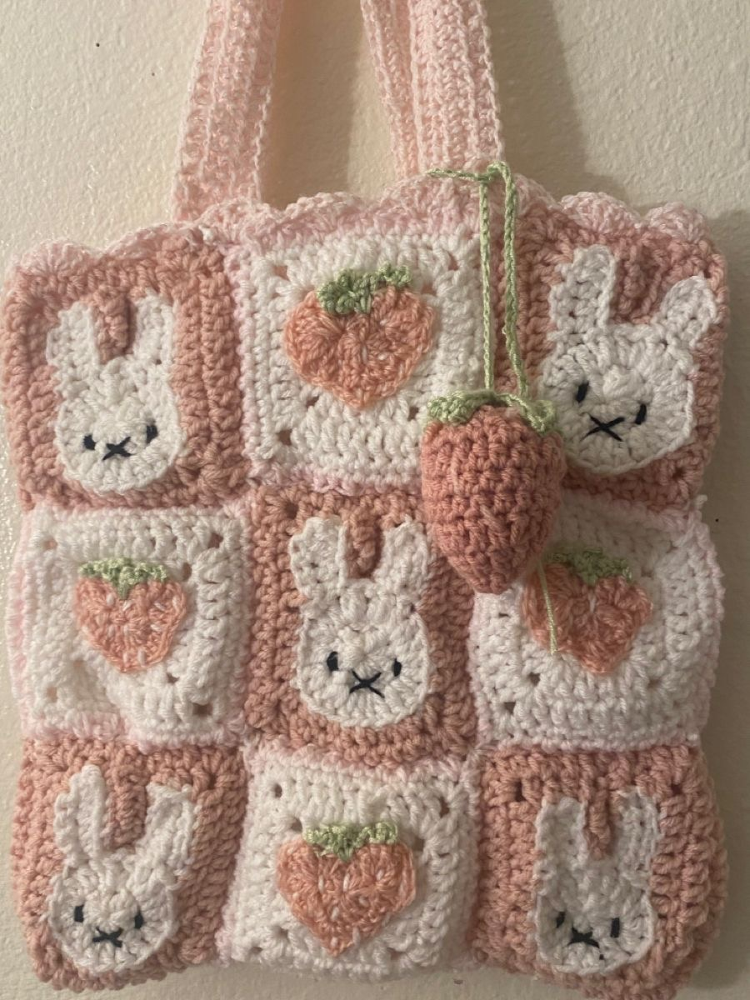
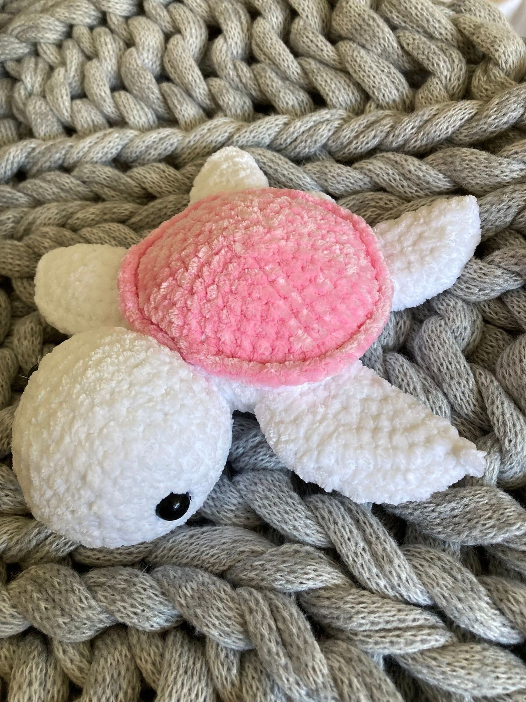
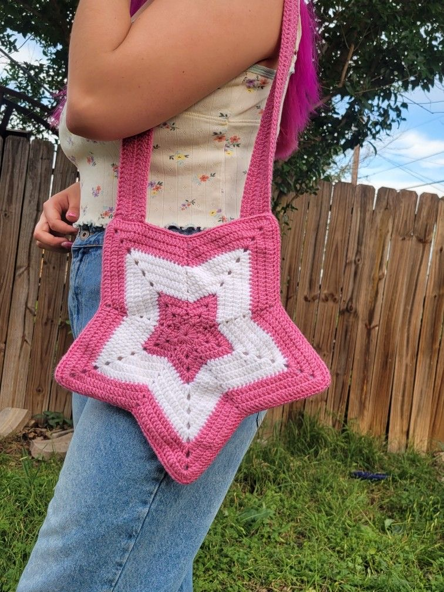

---Crochet---
Welcome!
Welcome to my website!
If you are looking to get started with crochet you made it to the right place! This is the all inclusive guide to crochet you need if you are a beginner.
This website includes basic information on crochet, how to do common stitiches, and easy beginner patterns. Links to purchase beginner friendly supplies are also included.
Crochet is a very fun and relaxing hobby. I hope you enjoy!
Projects you will eventually be able to make:



